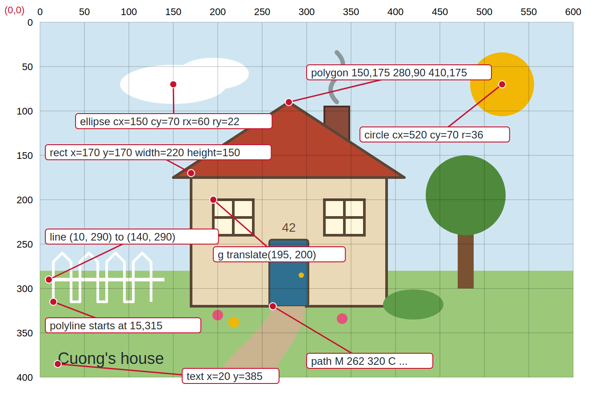
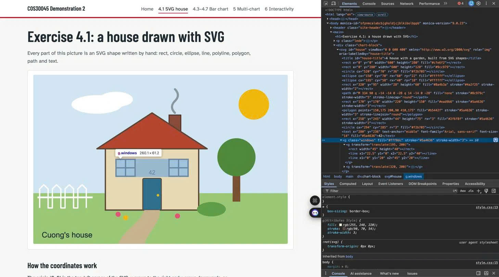

Exercise 4.1: a house drawn with SVG
Every part of this picture is an SVG shape written by hand: rect, circle, ellipse, line, polyline, polygon, path and text.
How the coordinates work
The origin (0, 0) is the top-left corner of the SVG. x grows to the right and y grows downwards, so the ground at y = 280 sits below the sun at y = 70. The annotated screenshot shows one example of each shape and the attributes that position it.

Grouping the windows
Both windows sit inside one <g class="windows">. The fill and stroke are set once on the group and inherited by both windows. Each window is its own small group moved into place with transform="translate(x, y)", so the rect and lines inside it are drawn from (0, 0).
The SVG in the DOM
Browser developer tools show each shape as an element inside the <svg>, with the window groups nested inside g.windows.
